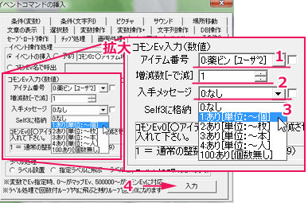
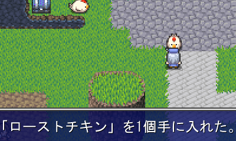
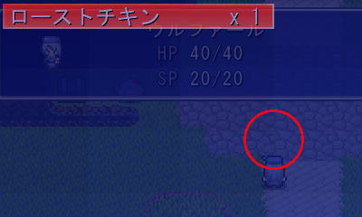

・適当な場所にイベントを作成してニワトリの画像を設定しておきます。
手順は◆決定キーで起動するイベントの【1】〜【5】を参考にしてください。

| ・ニワトリを調べるとアイテムを入手できるようにする ・2回目以降アイテムをもらえないようにする ・アイテム入手後、ニワトリのグラフィックを削除する 宝箱からアイテムを入手する方法については、◆一度空いたら空きっぱなしの宝箱で詳しく書かれています。 |
|
・まずマップ選択 ・適当な場所にイベントを作成してニワトリの画像を設定しておきます。 手順は◆決定キーで起動するイベントの【1】〜【5】を参考にしてください。 | |
|
作成したら、イベントウィンドウの右下にある「■コマンド入力ウィンドウ表示■」をクリックしてください。 1.「イベントコマンドの挿入」ウィンドウが出たら、 その他2タブをクリックします。画像の1 2.丸で囲まれた「イベントの挿入」が選ばれてい るか、確認します。画像2 文字の左の白丸に黒丸がついていれば、選択 されています。 ※ もし、選ばれてなかったらクリックして選択し て下さい。 3.四角3で囲まれた場所をクリックすると、選ぶこ とができるコモンイベントのリストが表示されま す。 画像3今回はアイテム入手のイベントなので、 「コモン0：○アイテム増減」を選択しましょう。 |  |
|
続いてコモンEv入力（数値）という欄をいじります。 1.「アイテム番号」では入手する アイテムを選択します。 ※ 末尾の［ユーザー２］という 表記は気にする必要ありませ ん。 2.「増減数」は１のアイテムをいく つ増やすか・減らすかを設定し ます。 マイナスの数値を設定すれば アイテムを減らすこともできま す。 3.次の「入手メッセージ」ですが、 これは「「○○」を○個手に入れ た。」 というメッセージを表示するかど うか、を選択できるという事で す。 ここで表示せず、後ほど「文章 の表示」で表示することもでき ます。 4.最後に矢印の「入力」ボタンを 押します。 これでアイテムを手に入れる処理が完成しました。 |  |
|
ここまででアイテムを入手するイベントは出来ましたが、 このままでは話しかけるたびにアイテムを入手できてしまいます。 （それでも構わない方はここをクリック） それを防ぐための処理を作りましょう。 なんのための処理かは特に考えず、次の【5】の通りに設定しましょう。 詳細を知りたい方は◆一度空いたら空きっぱなしの宝箱をご覧下さい。 |
|
・「コモンイベントの挿入ウィンドウ」から「変数操作」を見つけてクリックします。 ・赤いラインを引いた箇所を確認します。右の画像と同じになるように設定してください。 ・最後に右下の入力を押します。 ここで設定したのは「このイベントのセルフ変数0番」に「1+0=1」を代入するという処理です。 |  |
|
画像はイベントウィンドウの左上です。 黄色の四角で囲んだ部分に注目してください。 1.「新規ページ」ボタンをクリックします。 2.「ページ2」ボタンをクリックしてページ2を開きます。 |  |
|
グラフィックやイベントが設定されていない新しいページができました。 2ページ目はアイテムを入手した後の状態のイベントです。 グラフィックを「画像なし」（デフォルト）に設定します。 |  |
|
「イベント起動条件」を設定しましょう。 紫の四角で囲んだ箇所に注目してください。 1.一番左のチェックボックスをクリックしてチェックをつけます。 2.「Self」ボタンをクリックして選択。 3.「セルフ変数0」を選びます。 4.数値の「1」を入力します。 5.「と同じ」を選択します。 イベントの内容は、何も無しのままです。 これで2ページ目に、画像がなく、調べても何も起こらないイベントが完成しました。 |  |
|
マップをセーブしてテストプレイをしましょう！ イベントウィンドウのテストプレイボタンをクリックすると、自動でセーブされます。 |  |
|
まずはイベントを調べてみます。 無事にアイテムをゲット！ 文章もしっかり表示されています。 ※もし上手くいかなかったら……。 ・アイテム番号が間違ってい ないか。 ・増減数が0やマイナスになっ ていないか。 ・入手メッセージが「0:なし」に なっていないか。 確認してください。 |  |
|
キャンセルキーを押してメニューを出し、アイテム欄を確認しましょう。 ウィンドウの後ろ、丸で囲んだ部分のイベント画像が消えているのも確認できました。 ※もし上手くいかなかったら……。 ・変数操作で代入するセルフ 変数を間違えていないか。 ・そのセルフ変数を上書きし ていないか。 ・代入した値が間違っていな いか。 ・ページを間違えていないか。 ・ページ2の起動条件が間 違っていないか。 （◆一度空いたら空きっぱなしの宝箱の【10】参照） を確認してください。 |  |
|
長くなりましたが、お疲れ様でした。 以上で「所持アイテムを増減させたい」は終了です。 |